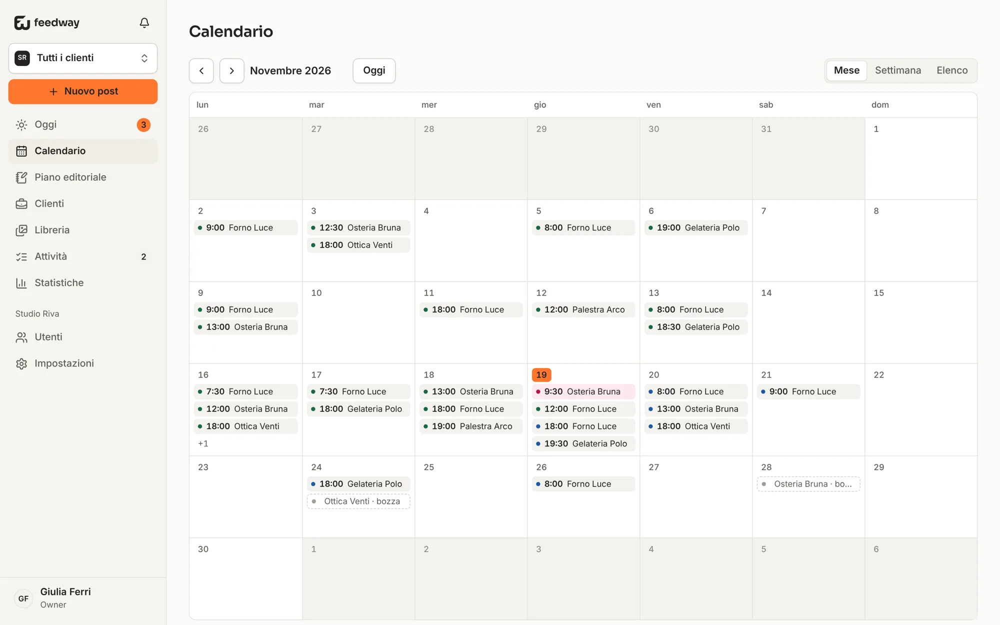
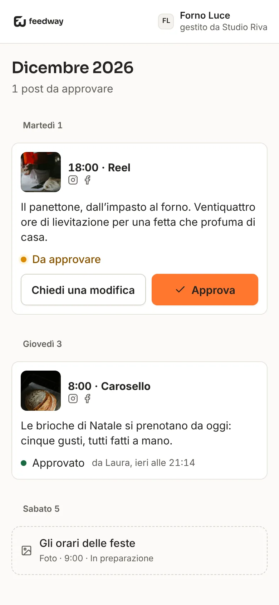

Piano editoriale In arrivo
Il mese scritto come su un'agenda: il 10 il reel, il 12 il carosello del menu. Con un clic il contenuto diventa un post già compilato.

Per le agenzie di comunicazione
Clienti, team, contenuti e pubblicazioni. Prepari i post di tutti i clienti, li programmi su Instagram e Facebook e sai se sono usciti davvero.
File, testo e profili, con l'anteprima vera.
Misure e formato giusti per feed e storie.
Se Meta non lo pubblica, sai subito perché.
Il prodotto
Il mese scritto come su un'agenda: il 10 il reel, il 12 il carosello del menu. Con un clic il contenuto diventa un post già compilato.
Scrivi il testo una volta e cambialo per Instagram o Facebook solo se serve. L'anteprima è quella che vedrà chi segue.

Foto e video in cartelle. Carichi anche uno zip: Feedway prepara le copie giuste e toglie la posizione dalle foto.

Mese, settimana o elenco. Ogni post ha il suo stato, e i contenuti ancora da preparare diventano gialli quando mancano meno di 36 ore.

Nel pannello, per email o su Telegram, con le ore di silenzio.
Shooting, testi, report: con scadenza e persone assegnate.
Ognuno vede solo i clienti che segue.
Il pannello gira sul tuo server, dietro Tailscale.
Pubblicazione
Dopo l'ora programmata Feedway chiede a Meta se il post c'è. Se manca, lo scrive con il motivo e ti dice cosa fare.
Copie pronte per @fornoluce e la Pagina Forno Luce.
Feedway manda il post a Instagram e a Facebook.
Chiede a Meta se il post è davvero sul profilo.
Con il link al post su Instagram e su Facebook.
Per i tuoi clienti
Un link per cliente, senza account e senza password. Vede cosa esce e quando, e lascia un commento o un ok.
In arrivo

Oggi Instagram e Facebook. TikTok e LinkedIn sono previsti dopo.
No. Riceve un link suo e vede solo il suo calendario.
Sul server dell'agenzia. Il pannello si apre solo da chi è nella vostra rete Tailscale.
Mezz'ora in videochiamata: ci racconti come lavorate oggi e ti mostriamo il pannello con i tuoi profili.
Richiedi una demo